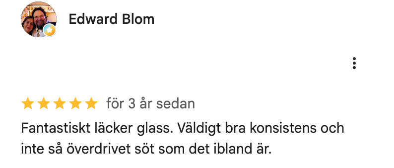

Bröllopet är bara en dag - men om ni är i Rom flera dagar så kommer här lite tips från oss!
Restauranger
Il Corallo
Via del Corallo 10, nära Piazza Navona. Klassisk romsk pizza (tunn och knaprig) och pasta. Våra favoriter är pasta Arrabiata och pizza Rossa con burrata e basilico!
Il Maritozzo Rosso
Roms bästa carbonara. Spartanskt ställe med papptallrikar - men carbonaran är banger
MASTO a Testaccio
Ligger i arbetarkvarteret Testaccio. Mycket vin, chark och ost - men även riktigt god pasta.
Barer
Bar San Calisto
Sköna vibes med mycket folk. Billiga drinkar och lokal stämning i Trastevere.
ANTIGALLERY
Trendiga ungdomar som hänger utomhus. Aperol i plastglas. Hippt.
Abbey Theatre
Ligger på vår favoritgata i Rom - överlag mycket mysiga restauranger och butiker här. Peroni och Birra Moretti Rossa på fat, AC inomhus och uteservering. Ingen sätter sig på en irländsk bar i Rom, så alltid lediga platser.
Sevärdheter
Inte de vanliga turistfällorna - här är grejer ni kanske missat.
San Clemente
Kyrka på kyrka på kyrka. Tre lager historia ovanpå varandra - gå ner i underjorden.
Le Domus Romane di Palazzo Valentini
En visuell upplevelse över hur det såg ut i Roms villor. Projektion och ljud över antika ruiner under en modern byggnad.
Områden
Trastevere
Roms bästa kvarter för en kväll ute. Kullerstensgator fulla med barer, restauranger och folk som hänger utomhus med vin i handen. Bra utgångspunkt om ni vill barhoppa.
Monti
Hippt och mysigt kvarter med vintage-butiker, vinbarer och små restauranger. Lugnt dagtid, livligt på kvällen. Roms mest bohemiska hörn.
Ponte
Området kring Via del Governo Vecchio och Piazza Navona. Smala gator med bra matställen och barer. Centralt men ändå med lokal känsla.
Testaccio
Arbetarkvarteret där romarna själva äter. Mindre turister, mer autentiskt. Bra marknad dagtid och grymma trattorier.
Gelato
Frigidarium
Vi har inte så bra koll på glass. Men detta ligger på vår favoritgata, mittemot Abbey Theatre. Och framförallt så har Edward Blom gett Frigidarium 5 stjärnor:
